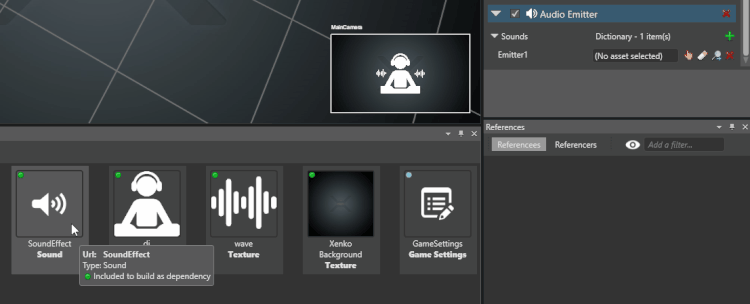
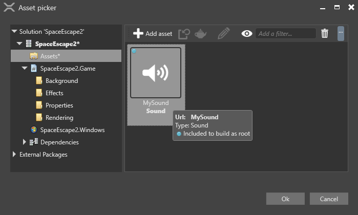
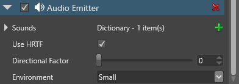
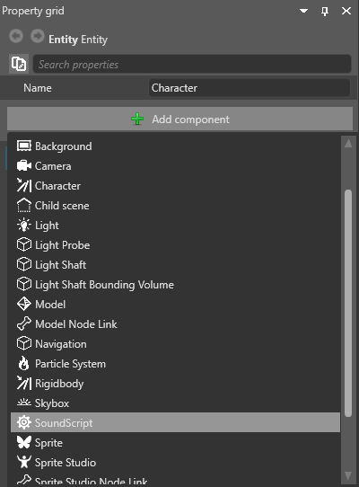

Аудиоизлучатели / Источники звука
Начинающий Программист Дизайнер
Компоненты Audio emitter издают звук, используемый для создания пространственного звука. Вы можете добавить их к любому объекту.
Высота и громкость звука изменяются по мере того как аудио слушатель приближается к источнику звука и удаляется от него.
Note
Вам нужен как минимум один компонент AudioListenerComponent в сцене, чтобы слышать звук от аудиоизлучателей.
1. Настройка актива аудиоизлучателя
В Обзоре сцены (Scene view) выберите объект, который вы хотите сделать источником звука.

В Сетке свойств (Property Grid), нажимите Добавить компонент (Add component) и выберите Аудиоизлучатель (Audio Emitter).

Теперь нам нужно добавить звук к излучателю.
Под Аудиоизлучателем (Audio Emitter), нажимите
 (Добавить (Add)) и укажите название аудио.
(Добавить (Add)) и укажите название аудио.
Из Просмотра активов (Asset View), перетащите аудиоресурс на только что добавленный вами аудиофайл:

В качестве альтернативы нажмите
 (Выберите актив (Select an asset)).
(Выберите актив (Select an asset)).
Затем выберите аудиоактив:

Повторите шаги 3 и 4, чтобы добавить столько аудиоресурсов, сколько вам нужно.
Настройте свойства этого аудиоизлучателя.

| Свойство | Описание |
|---|---|
| Использовать HRTF (Use HRTF) | Включить функцию передачи, связанную с головой (HRTF). При включении этой функции создается впечатление, что звуки исходят из определенной точки трехмерного пространства, что создает бинауральный звук. Для получения более подробной информации см. HRTF. |
| Directional factor | How directional the audio is, from 0 (min) to 1 (max). If set to 0, the audio is emitted from all directions. You can control this with a slider or number value. |
| Environment | The reverb type for the audio, simulating reverberation of real environments (small, medium, large, or outdoors). |
2. Create a script to play the audio
Now we need to create a script to play and configure the audio asset.
In your script, instantiate AudioEmitterSoundController for each sound you want to use in the script.
For example, say we have two sounds, MySound1 and MySound2:
AudioEmitterComponent audioEmitterComponent = Entity.Get<AudioEmitterComponent>(); AudioEmitterSoundController mySound1Controller = audioEmitterComponent["MySound1"]; AudioEmitterSoundController mySound2Controller = audioEmitterComponent["MySound2"];Use the following AudioEmitterSoundController properties and methods to play and configure the audio:
| Property / method | Description |
|---|---|
| IsLooping | Loops audio. Has no effect if PlayAndForget() is set to true. |
| Pitch | Gets or sets sound pitch (frequency). Use with caution for spatialized audio. |
| PlayState | Gets the current state of the audio emitter sound controller. |
| Volume | Volume of the audio. |
| Pause() | Pauses audio. |
| Play() | Plays audio. |
| PlayAndForget() | Plays audio once, then clears the memory. Useful for short sounds such as gunshots. Overrides IsLooping. |
| Stop() | Stops audio. |
For example:
mySound1Controller.IsLooping = true;
mySound1Controller.Pitch = 2.0f;
mySound1Controller.Volume = 0.5f;
mySound1Controller.Play();
This sound will loop at double the original pitch and half the original volume. For more information, see the AudioEmitterSoundController Stride API documentation.
3. Add the script to the audio emitter entity
Game Studio lists the script as a component under Add component. Add the script to the audio emitter entity.
In the Scene view, select an entity you want to be an audio emitter.
Click Add component and select the script.
